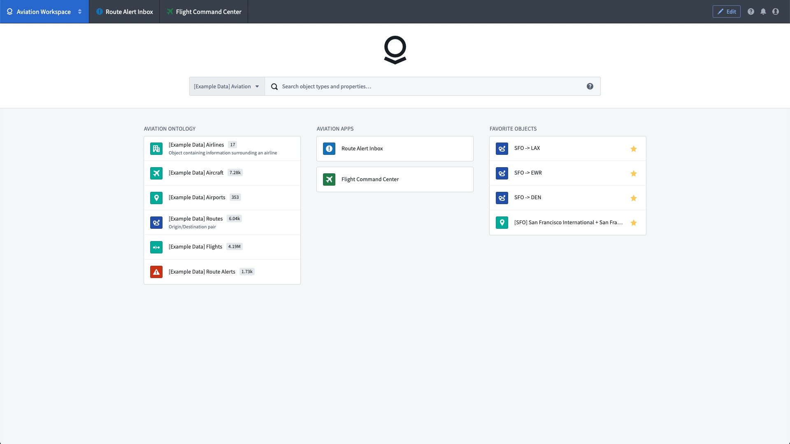
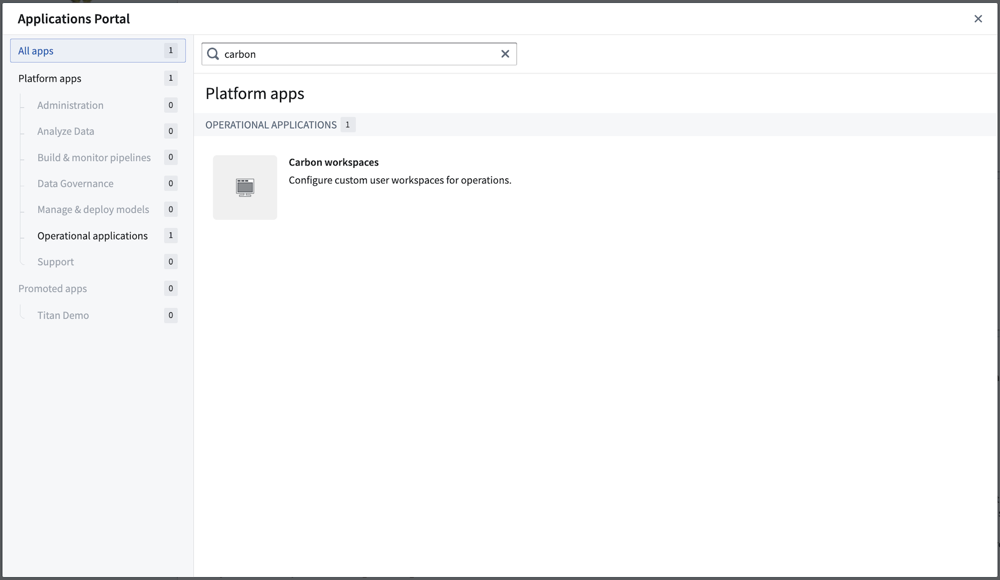
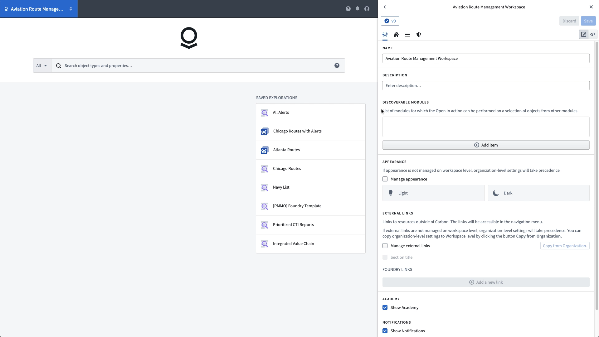
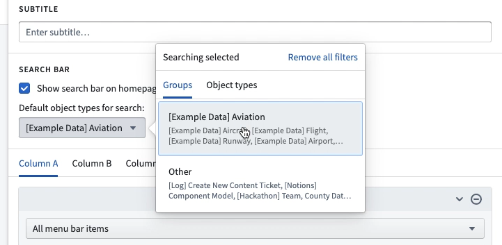
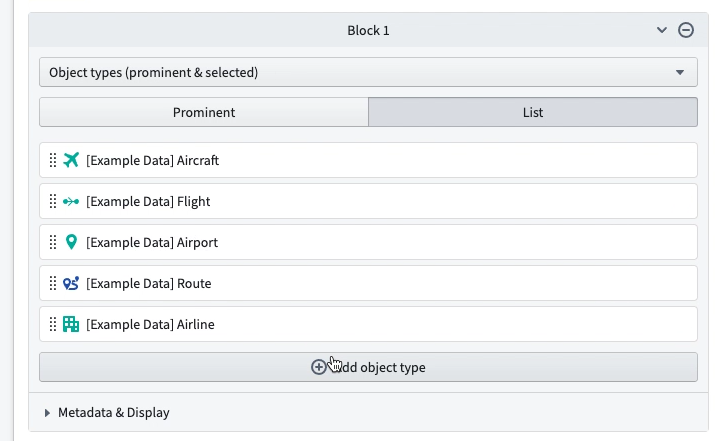
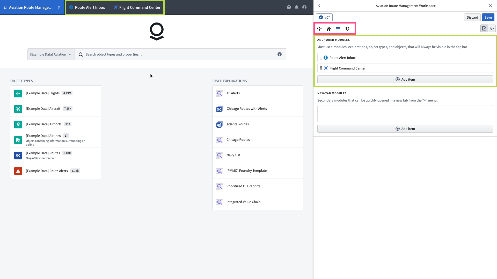

:::callout{theme="warning" title="Carbon Permissions"} To configure a Carbon Workspace, a Foundry developer will need the correct permissions. :::
This guide demonstrates the creation of a simple Carbon workspace using resources from the Foundry Training and Resources Project, which is included as part of the Foundry platform. The end result is an aviation workspace designed for an airline analyst to review alerts related to the performance of particular flight routes. This workspace includes quick links to relevant applications and data, along with access to the analyst's favorite individual objects.

The example Aviation Workspace represents a bare minimum of Carbon configuration and is intended for use as a simple reference. The remainder of the Carbon documentation contains complete descriptions of available configuration options.
To configure a new Carbon workspace, first open Carbon workspaces from the Application Portal. Then, follow the instructions to create a new Carbon workspace.

Each Carbon workspace has a set of four configuration tabs in the right sidebar:
To begin, add a Name and Description in the General tab.

The default home page presents a three-column layout, where each column is populated with one or more blocks of featured items. Above the columns are an optional logo and the Object Explorer search bar.
Before turning to the contents of the columns, restrict the object types that are searched from the search bar. If there are object type groups configured, choose from these in the Groups list or change to the object types list and choose one or more object types to restrict the search results.

To turn to the home page content, in Column A, add a list of the relevant object types for this workspace, adding a new block for Object types (prominent & selected) and choosing the List option, which allows selecting each object type displayed automatically.

The Menu Bar holds links to Foundry resources that open within the context of the workspace. In this example, we add two Workshop modules, the Route Alert Inbox and the Flight Command Center. These Anchored Modules will be permanent tabs in the workspace. Additional resources can be added as New-Tab Modules, which will be available in a dropdown and open in a new tab when selected.

After updating the menu bar, return to the home page configuration and add a new block in Column B with the All menu bar items contents, which will automatically populate with any resources configured in the menu bar. These will populate after the workspace is saved.
In the upper right corner of the edit interface, click the Save button to save a new version of the workspace then click the x icon to leave edit mode and review the workspace as it will appear to users.
We now have a simple but functioning Carbon workspace. You can continue customizing this example workspace, manage its access controls, or connect it to other applications with the information in the links below: